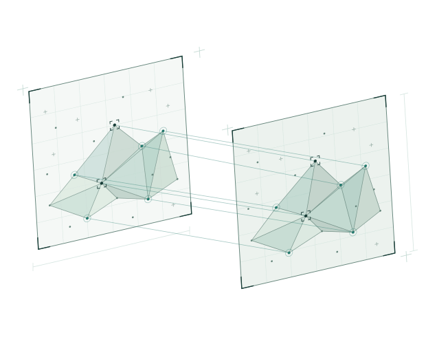

面向驾驶与机器人操作的视觉语言动作学习
探索三维几何与世界模型如何支持语言条件下的决策和行动学习。

我是 Jiahui Huang，目前在小米汽车担任算法工程师。我的工作从自动驾驶感知出发，逐步延伸到 BEV 表征学习、三维几何世界模型，以及面向驾驶和机器人操作的视觉语言动作学习。
交通运输工程硕士
算法工程师
从视觉感知到表征学习，再到面向行动的世界模型。
围绕三维几何世界模型、视觉到动作学习，以及面向驾驶和机器人操作的 VLA 方法开展研究。
探索视觉基础模型语义蒸馏、未来 BEV 预测与表征评测。
多相机融合、多任务训练与视觉检测模型优化。
单目三维检测、几何深度估计与感知模型的工程部署。
探索三维几何、世界模型与视觉语言动作学习。
Google Scholar探索三维几何与世界模型如何支持语言条件下的决策和行动学习。
欢迎交流计算机视觉、三维几何、世界模型与视觉语言动作学习相关的研究想法。